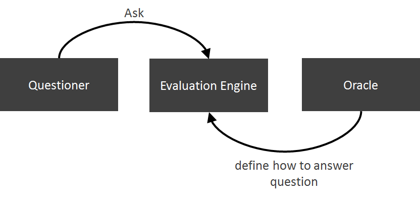
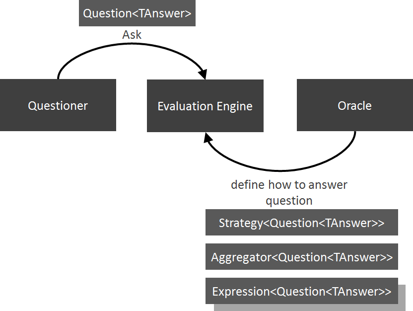
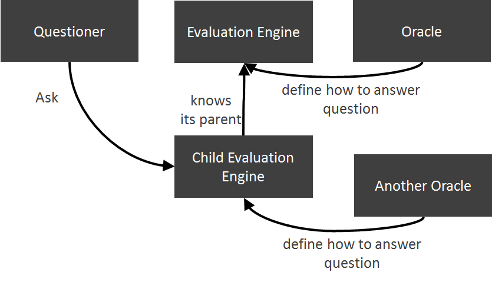

In many applications, the program flow depends on a lot of decisions whether some condition is met or not. This leads to if statements checking all kind of things through out the code:
The problem with such code is that it gets hard to maintain. Whenever a rule changes, you have to make sure that you change all if statements using it. Furthermore, the code checking the condition needs to know a lot about the details how the decision is made and therefore needs to know a lot of dependencies (like context, foo, bar and foobar in the above example).
The evaluation engine solves this problem by decoupling the code defining what happens under what conditions (questioner) from the code deciding which conditions hold (oracle);

For a quick introduction see the Tutorial.
For the specification see Specification
The oracle defines the strategy, aggregator and expressions used to answer a question:

The question passed to the evaluation engine has to be derived from IQuestion or
IQuestion. TAnswer defines the type of the result passed back to the
questioner. The optional TParameter defines the type of the parameter passed along with the question.
You can pass data provided by the questioner and needed by the oracle either in the question or as a parameter.
Use the parameter for values that differ when you ask multiple times the same question.
For example if you want to know whether a value is valid, you can define a question IsDataValid implementing
IQuestion and ask the same question (using the same instance) but pass along different values as parameters:
Important:Questions should be immutable objects to make sure that the question cannot be changed during execution of the answer finding process.
Somewhere in the code, you have to specify how a question is answered. For example:
The strategy defines how the answer to the question is calculated. The default strategy used by the evaluation engine if no strategy is defined is to use the aggregator strategy that will simply pass all defined expressions to the specified aggregator and let the aggregator do the work. This strategy is sufficient for almost all scenarios.
The aggregator takes the results of the individual expressions defined by ByEvaluating and aggregates them
into a single result that is passed back to the strategy and in case you use the default strategy back to the questioner.
There exist several built-in aggregators and you can use your own.
An expression calculates a part of the result. This allows you to add and remove expressions when your requirements change easily.
You can use inline expressions as shown in the sample or instances of classes implementing IExpression
Modules are used to load solution definitions in a modular way.
If your dependency injection container for example allows you to acquire all classes implementing
IEvaluationEngineModule, you can use the container to load all definitions from all your code
and plug-ins automatically.
Hierarchical evaluation engines can be used in cases you have nested contexts. And each context has to answer questions slightly different. You can define the global behaviour in a parent evaluation engine and change behavior in a child engine. The child engine inherits all knowledge of the parent, but can change the aggregator and add expressions.
